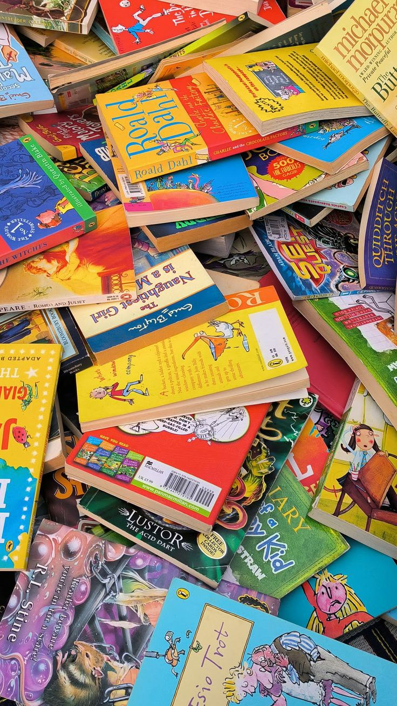

Pensamientos de una practicante de Educación Infantil
Un espacio para compartir mis experiencias, mis dudas y mis aprendizajes, que transforman día a día mi manera de mirar la infancia y la enseñanza.
Conocer el portafolioNo tengo todas las respuestas. Estoy aprendiendo a mirar.

Este portafolio reúne algunas de las reflexiones que han surgido durante mi formación como futura docente, especialmente a partir de las lecturas del curso y de mis experiencias en las prácticas. A través de estos contenidos quiero compartir lo que he observado, las ideas con las que estoy de acuerdo y las situaciones que me han llevado a cuestionar algunas formas de enseñar. Todavía estoy construyendo mi manera de entender la educación, por eso considero importante relacionar lo que aprendo en la universidad con lo que sucede en los espacios educativos. Aquí encontrarás reflexiones sobre la infancia, la enseñanza y el aprendizaje de la lectura y la escritura, junto con algunas preguntas que siguen abiertas para mí.
Aprender a mirar también es aprender a preguntar.
Cada apartado nace de una experiencia, una lectura o una pregunta que sigue acompañando mi formación.